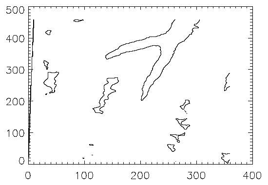
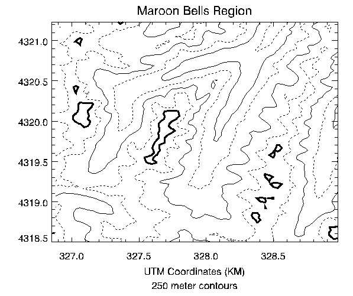
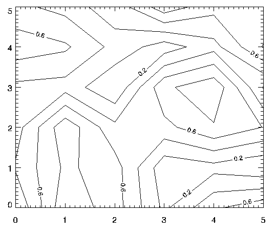
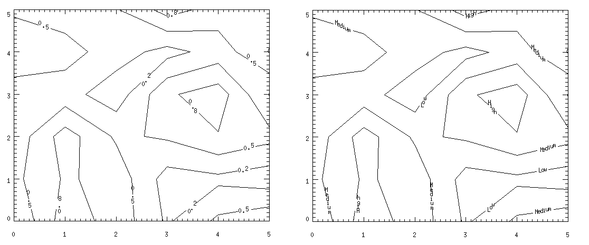
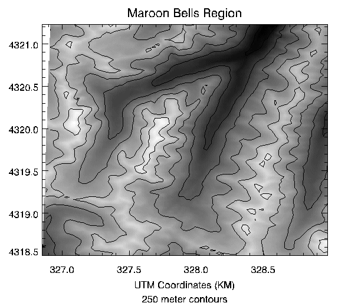
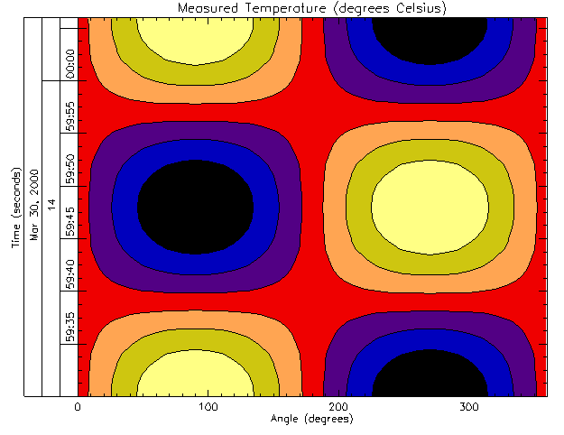

Syntax | Arguments | Keywords | Examples | Version History | See Also
Note: Please see the CONTOUR function, which replicates the functionality of this routine and offers an interactive interface.
The CONTOUR procedure draws a contour plot from data stored in a rectangular array or from a set of unstructured points. Both line contours and filled contour plots can be created. Note that outline and fill contours cannot be drawn at the same time. To create a contour plot with both filled contours and outlines, first create the filled contour plot, then add the outline contours by calling CONTOUR a second time with the OVERPLOT keyword.
In its simplest form, CONTOUR makes a contour plot given a two-dimensional array of z values. In more complicated forms, CONTOUR accepts, in addition to z , arrays containing the x and y locations of each column, row, or point, plus many keyword parameters. In more sophisticated applications, the output of CONTOUR can be projected from three dimensions to two dimensions, superimposed over an image, or combined with the output of SURFACE.
Using various keywords, described below, it is possible to specify contour levels, labeling, colors, line styles, and other options. CONTOUR draws contours by searching for each contour line and then following the line until it reaches a boundary or closes.
Contours can be smoothed by using the MIN_CURVE_SURF function on the contour data before contouring. The MIN_CURVE_SURF function can be used to smoothly interpolate both regularly and irregularly sampled surfaces before contouring. This function replaces the older SPLINE keyword to CONTOUR, which was inaccurate and is no longer supported. MIN_CURVE_SURF interpolates the entire surface to a relatively fine grid before drawing the contours.
CONTOUR, Z [, X , Y ] [, C_ANNOTATION = vector_of_strings ] [, C_CHARSIZE = value ] [, C_CHARTHICK = integer ] [, C_COLORS = vector ] [, C_LABELS = vector {each element 0 or 1}] [, C_LINESTYLE = vector ] [, C_ORIENTATION = degrees ] [, C_SPACING = value ] [, C_THICK = vector ] [, / CELL_FILL | , / FILL ] [, / CLOSED ] [, / DOWNHILL ] [, / FOLLOW ] [, / IRREGULAR ] [, / ISOTROPIC ] [, LEVELS = vector ] [, NLEVELS = integer {1 to 60}] [, MAX_VALUE = value ] [, MIN_VALUE = value ] [, / OVERPLOT ] [{, / PATH_DATA_COORDS , PATH_FILENAME = string , PATH_INFO = variable , PATH_XY = variable } | , TRIANGULATION = variable ] [, / PATH_DOUBLE ] [, / XLOG ] [, / YLOG ] [, ZAXIS ={0 | 1 | 2 | 3 | 4}]
Graphics Keywords: Accepts all graphics keywords accepted by PLOT except for: LINESTYLE, PSYM, SYMSIZE. See Graphics Keywords Accepted .
Note: Many of the keyword parameters correspond directly to fields in the system variables !P, !X, !Y, or !Z. When specifying a keyword parameter name and value in a call that value affects only the current call, the corresponding system-variable field is not changed. Changing the value of a system-variable field changes the default for that particular parameter and remains in effect until explicitly changed. The system variables involving graphics and their corresponding keywords are detailed in !PI.
A one- or two-dimensional array containing the values that make up the contour surface. If arguments X and Y are provided, the contour is plotted as a function of the (X, Y) locations specified by their contents. Otherwise, the contour is generated as a function of the two-dimensional array index of each element of Z .
If the IRREGULAR keyword is set, X, Y, Z are all required, and are treated as vectors. Each point has a value of Z[ i ] and a location of (X[ i ], Y[ i ]).
This argument is converted to double-precision floating-point before plotting. Plots created with CONTOUR are limited to the range and precision of double-precision floating-point values.
A vector or two-dimensional array specifying the X coordinates for the contour surface. If X is a vector, each element of X specifies the X coordinate for a column of Z (e.g., X[0] specifies the X coordinate for Z[0,*]). If X is a two-dimensional array, each element of X specifies the X coordinate of the corresponding point in Z (i.e., X ij specifies the X coordinate for Z ij ).
A vector or two-dimensional array specifying the Y coordinates for the contour surface. If Y a vector, each element of Y specifies the Y coordinate for a row of Z (e.g., Y[0] specifies the Y coordinate for Z[*,0]). If Y is a two-dimensional array, each element of Y specifies the Y coordinate of the corresponding point in Z ( Y ij specifies the Y coordinate for Z ij ).
The label to be drawn on each contour. Usually, contours are labeled with their value. This parameter, a vector of strings, allows any text to be specified. The first label is used for the first contour drawn, and so forth. If the LEVELS keyword is specified, the elements of C_ANNOTATION correspond directly to the levels specified, otherwise, they correspond to the default levels chosen by the CONTOUR procedure. If there are more contour levels than elements in C_ANNOTATION, the remaining levels are labeled with their values.
Use of this keyword implies use of the FOLLOW keyword.
Note: This keyword has no effect if the FILL or CELL_FILL keyword is set (i.e., if the contours are drawn with solid-filled or line-filled polygons).
To produce a contour plot with three levels labeled “low”, “medium”, and “high”:
CONTOUR, Z, LEVELS = [0.0, 0.5, 1.0], $
C_ANNOTATION = ['low', 'medium', 'high']
The size of the characters used to annotate contour labels. Normally, contour labels are drawn at 3/4 of the size used for the axis labels (specified by the CHARSIZE keyword or !P.CHARSIZE system variable. This keyword allows the contour label size to be specified directly. Use of this keyword implies use of the FOLLOW keyword.
The thickness of the characters used to annotate contour labels. Set this keyword equal to an integer value specifying the line thickness of the vector drawn font characters. This keyword has no effect when used with the hardware drawn fonts. The default value is 1. Use of this keyword implies use of the FOLLOW keyword.
The color index used to draw each contour. This parameter is a vector, converted to integer type if necessary. If there are more contour levels than elements in C_COLORS, the elements of the color vector are cyclically repeated.
If C_COLORS contains three elements, and there are seven contour levels to be drawn, the colors c 0 , c 1 , c 2 , c 0 , c 1 , c 2 , c 0 will be used for the seven levels. To call CONTOUR and set the colors to [100,150,200], use the command:
CONTOUR, Z, C_COLORS = [100,150,200]
Specifies which contour levels should be labeled. By default, every other contour level is labeled. C_LABELS allows you to override this default and explicitly specify the levels to label. This parameter is a vector, converted to integer type if necessary. If the LEVELS keyword is specified, the elements of C_LABELS correspond directly to the levels specified, otherwise, they correspond to the default levels chosen by the CONTOUR procedure. Setting an element of the vector to zero causes that contour label to not be labeled. A nonzero value forces labeling.
Use of this keyword implies use of the FOLLOW keyword.
To produce a contour plot with four levels where all but the third level is labeled:
CONTOUR, Z, LEVELS = [0.0, 0.25, 0.75, 1.0], $
C_LABELS = [1, 1, 0, 1]
The line style used to draw each contour. As with C_COLORS, C_LINESTYLE is a vector of line style indices. If there are more contour levels than line styles, the line styles are cyclically repeated. See LINESTYLE for a list of available styles.
Note: The cell drawing contouring algorithm draws all the contours in each cell, rather than following contours. Since an entire contour is not drawn as a single operation, the appearance of the more complicated linestyles will suffer. Use of the contour following method (selected with the FOLLOW keyword) will give better looking results in such cases.
To produce a contour plot, with the contour levels directly specified in a vector V, with all negative contours drawn with dotted lines, and with positive levels in solid lines:
CONTOUR, Z, LEVELS = V, C_LINESTYLE = (V LT 0.0)
If the FILL or CELL_FILL keyword is set, this keyword can be set to the angle, in degrees counterclockwise from the horizontal, of the lines used to fill contours. If neither C_ORIENTATION nor C_SPACING are specified, the contours are solid filled.
If the FILL or CELL_FILL keyword is set, this keyword can be used to control the distance, in centimeters, between the lines used to fill the contours.
The line used to draw each contour level. As with C_COLORS, C_THICK is a vector of line thickness values, although the values are floating point. If there are more contours than thickness elements, elements are repeated. If omitted, the overall line thickness specified by the THICK keyword parameter or !P.THICK is used for all contours.
Set this keyword to produce a filled contour plot using a “cell filling” algorithm. Use this keyword instead of FILL when you are drawing filled contours over a map, when you have missing data, or when contours that extend off the edges of the contour plot. CELL_FILL is less efficient than FILL because it makes one or more polygons for each data cell. It also gives poor results when used with patterned (line) fills, because each cell is assigned its own pattern. Otherwise, this keyword operates identically to the FILL keyword, described below.
Tip: In order for CONTOUR to fill the contours properly when using a map projection, the X and Y arrays (if supplied) must be arranged in increasing order. This ensures that the polygons generated will be in counterclockwise order, as required by the mapping graphics pipeline.
Note: Do not draw filled contours over the poles on Cylindrical map projections. In this case, the polar points map to lines on the map, and the interpolation becomes ambiguous, causing errors in filling. One possible work-around is to limit the latitudes to the range of -89.9 degrees to + 89.9 degrees, avoiding the poles.
Set this keyword to a nonzero value to close contours that intersect the plot boundaries. After a contour hits a boundary, it follows the plot boundary until it connects with its other boundary intersection. Set CLOSED=0 along with PATH_INFO and/or PATH_XY to return path information for contours that are not closed.
Set this keyword to label each contour with short, perpendicular tick marks that point in the “downhill” direction, making the direction of the grade readily apparent. If this keyword is set, the contour following method is used in drawing the contours. For example:
CONTOUR, data, /DOWNHILL
Set this keyword to produce a filled contour plot. The contours are filled with solid or line-filled polygons. For solid polygons, use the C_COLOR keyword to specify the color index of the polygons for each contour level. For line fills, use C_ORIENTATION, C_SPACING, C_COLOR, C_LINESTYLE, and/or C_THICK to specify attributes for the lines.
If the current device is not a pen plotter, each polygon is erased to the background color before the fill lines are drawn, to avoid superimposing one pattern over another.
Contours that are not closed cannot be filled because their interior and exterior are undefined. Contours created from data sets with missing data may not be closed; many map projections can also produce contours that are not closed. You should not use filled contours in these cases.
You should not use this keyword when you are drawing filled contours over a map, when you have missing data, or when contours extend off the edges of the contour plot. In these cases, you should use CELL_FILL instead.
Note: If the current graphics device is the Z-buffer, the algorithm used when the FILL keyword is specified will not work when a Z value is also specified with the graphics keyword ZVALUE. In this situation, use the CELL_FILL keyword instead of the FILL keyword.
In IDL version 5, CONTOUR always uses a line-following method. The FOLLOW keyword remains available for compatibility with existing code, but is no longer necessary. As in previous versions of IDL, setting FOLLOW will cause CONTOUR to draw contour labels.
Set this keyword to indicate that the input data is irregularly gridded. Setting IRREGULAR is the same as performing an explicit triangulation. That is:
CONTOUR, Z, X, Y, /IRREGULAR
is the same as
TRIANGULATE, X, Y, tri ;Get triangulation
CONTOUR, Z, X, Y, TRIANGULATION=tri
Note: If a mapping projection is enabled when CONTOUR is called with this keyword, the X and Y parameters are interpreted as latitude and longitude values. This implies that spherical triangulation should be performed, which in turn implies that the X and Y parameters will be converted to double precision and rearranged to match the spherical triangulation. See the SPHERE keyword to TRIANGULATE for details.
Set this keyword to force the scaling of the X and Y axes to be equal.
Note: The X and Y axes will be scaled isotropically and then fit within the rectangle defined by the POSITION keyword; one of the axes may be shortened. See POSITION for more information.
Specifies a vector containing the contour levels drawn by the CONTOUR procedure. A contour is drawn at each level in LEVELS.
To draw a contour plot with levels at 1, 100, 1000, and 10000:
CONTOUR, Z, LEVELS = [1, 100, 1000, 10000]
To draw a contour plot with levels at 50, 60, ..., 90, 100:
CONTOUR, Z, LEVELS = FINDGEN(6) * 10 + 50
Data points with values above this value are ignored (i.e., treated as missing data) when contouring. Cells containing one or more corners with values above MAX_VALUE will have no contours drawn through them. Note that the IEEE floating-point value NaN is also treated as missing data.
Data points with values less than this value are ignored (i.e., treated as missing data) when contouring. Cells containing one or more corners with values below MIN_VALUE will have no contours drawn through them. Note that the IEEE floating-point value NaN is also treated as missing data.
The number of equally spaced contour levels that are produced by CONTOUR. If the LEVELS parameter, which explicitly specifies the value of the contour levels, is present, this keyword has no effect. If neither parameter is present, approximately six levels are drawn. NLEVELS should be a positive integer.
Set this keyword to make CONTOUR “overplot”. That is, the current graphics screen is not erased, no axes are drawn and the previously established scaling remains in effect. You must explicitly specify either the values of the contour levels or the number of levels (via the NLEVELS keyword) when using this option, unless geographic mapping coordinates are in effect.
Note: When specifying overplot levels with the NLEVELS keyword, keep in mind that the levels are calculated according to the range set by the original CONTOUR call. If the overplot dataset has a different range, you might want to set your levels more explicitly with the NLEVELS keyword.
Set this keyword to cause the output contour positions to be measured in data units rather than the default normalized units. This keyword is useful only if the PATH_XY or PATH_FILENAME keywords are set.
Set this keyword to indicate that the PATH_FILENAME, PATH_INFO, and PATH_XY keywords should return vertex and contour value information as double-precision floating-point values. The default is to return this information as single-precision floating-point values.
Specifies the name of a file to contain the contour positions. If PATH_FILENAME is present, CONTOUR does not draw the contours, but rather, opens the specified file and writes the coordinates of the contours, into it. The file consists of a series of logical records containing binary data. Each record is preceded with a header structure defining the contour as follows:
If the PATH_DOUBLE keyword is not set:
{CONTOUR_HEADER, TYPE:0B, HIGH:0B, LEVEL:0, NUM:0L, VALUE:0.0}
If the PATH_DOUBLE keyword is set:
{CONTOUR_DBL_HEADER, TYPE:0B, HIGH:0B, LEVEL:0, NUM:0L, VALUE:0.0D}
The fields are:
|
Field |
Description |
|
TYPE |
A byte that is zero if the contour is open, and one if it is closed. |
|
HIGH |
A byte that is 1 if the contour is closed and above its surroundings, and is 0 if the contour is below. This field is meaningless if the contour is not closed. |
|
LEVEL |
A short integer with value greater or equal to zero (It is an index into the LEVELS array). |
|
NUM |
The longword number of data points in the contour. |
|
VALUE |
The contour value. If the PATH_DOUBLE keyword is not set, this is a single-precision floating-point value; if the PATH_DOUBLE keyword is set, this is a double-precision floating-point value. |
Following the header in each record are NUM X-coordinate values followed by NUM Y-coordinate values. By default, these values are specified in normalized coordinates unless the PATH_DATA_COORDS keyword is set.
Set this keyword to a named variable that will return path information for the contours. This information can be used, along with data stored in a variable named by the PATH_XY keyword, to trace closed contours. To get PATH_INFO and PATH_XY with contours that are not closed, set the CLOSED keyword to 0. If PATH_INFO is present, CONTOUR does not draw the contours, but rather records the path information in an array of structures of the following type:
If the PATH_DOUBLE keyword is not set:
{CONTOUR_PATH_STRUCTURE, TYPE:0B, HIGH_LOW:0B, $
LEVEL:0, N:0L, OFFSET:0L, VALUE:0.0}
If the PATH_DOUBLE keyword is set:
{COUNTOUR_DBL_PATH_STRUCTURE, TYPE:0B, HIGH_LOW:0B, LEVEL:0,
N: 0L, OFFSET:0L, VALUE:0.0D}
The fields are:
|
Field |
Description |
|
TYPE |
A byte that is zero if the contour is open, and one if it is closed. Note: If the CLOSED keyword is not explicitly set equal to zero, all contours will be closed. |
|
HIGH_LOW |
A byte that is 1 if the contour is above its surroundings, and is 0 if the contour is below. |
|
LEVEL |
A short integer indicating the index of the contour level, from zero to the number of levels minus one. |
|
N |
A long integer indicating the number of XY pairs in the contour’s path. |
|
OFFSET |
A long integer that is the offset into the array defined by PATH_XY, representing the first XY coordinate for this contour. |
|
VALUE |
The contour value. If the PATH_DOUBLE keyword is not set, this is a single-precision floating-point value; if the PATH_DOUBLE keyword is set, this is a double-precision floating-point value. |
See the examples section below for an example using the PATH_INFO and PATH_XY keywords to return contour path information.
Set this keyword to a named variable that returns the coordinates of a set of closed polygons defining the closed paths of the contours. This information can be used, along with data stored in a variable named by the PATH_INFO keyword, to trace closed contours. To get PATH_XY and PATH_INFO with contours that are not closed, set the CLOSED keyword to 0. If PATH_XY is present, CONTOUR does not draw the contours, but rather records the path coordinates in the named array. If the PATH_DOUBLE keyword is not set, the array will contain single-precision floating point values; if the PATH_DOUBLE keyword is set, the array will contain double-precision floating point values. By default, the values in the array are specified in normalized coordinates unless the PATH_DATA_COORDS keyword is set.
See the examples section below for an example using the PATH_INFO and PATH_XY keywords to return contour path information.
Set this keyword to a variable that contains an array of triangles returned from the TRIANGULATE procedure. Providing triangulation data allows you to contour irregularly gridded data directly, without gridding.
Set this keyword to specify a logarithmic X axis.
Set this keyword to specify a logarithmic Y axis.
Set this keyword to an integer value to draw a Z axis for the CONTOUR plot. CONTOUR draws no Z axis by default. This keyword is of use only if a three-dimensional transformation is established. Possible values are:
|
0 |
No Z axis is drawn (the default) |
|
1 |
Draws Z axis from the lower right-hand corner of the plot |
|
2 |
Draws Z axis from the lower left-hand corner of the plot |
|
3 |
|
|
4 |
Draws Z axis from the upper right-hand corner of the plot |
See Direct Graphics Keywords for the description of the following graphics and plotting keywords:
BACKGROUND , CHARSIZE , CHARTHICK , CLIP , COLOR , DATA , DEVICE , FONT , NOCLIP , NODATA , NOERASE , NORMAL , POSITION , SUBTITLE , T3D , THICK , TICKLEN , TITLE , [XYZ]CHARSIZE , [XYZ]GRIDSTYLE , [XYZ]MARGIN , [XYZ]MINOR , [XYZ]RANGE , [XYZ]STYLE , [XYZ]THICK , [XYZ]TICKFORMAT , [XYZ]TICKINTERVAL , [XYZ]TICKLAYOUT , [XYZ]TICKLEN , [XYZ]TICKNAME , [XYZ]TICKS , [XYZ]TICKUNITS , [XYZ]TICKV , [XYZ]TICK_GET , [XYZ]TITLE , ZVALUE
In addition to the following examples, also see the PLOT Procedure routine for samples that control plot position, configure axes and position multiple plots on a page. This section includes the following information:
|
|
Note: Several of the following examples use batch files.
The basic call to CONTOUR is as follows:
CONTOUR, Z
where Z is a two-dimensional array. This call labels the x - and y -axes with the subscript along each dimension. For example, when contouring a 10 ∞ 20 array, the x -axis ranges from 0 to 9, and the y -axis ranges from 0 to 19.
You can explicitly specify the x and y locations of each cell as follows:
CONTOUR, Z, X, Y
where the X and Y arrays can be either vectors or two-dimensional arrays of the same size as Z . If they are vectors, the element z i , j has a coordinate location of ( x i , y j ). Otherwise, if the x and y arrays are two-dimensional, the element z i , j has the location ( x i , j , y i , j ). Thus, vectors should be used if the x location of z i , j does not depend upon j and the y location of z i , j does not depend upon i .
Dimensions must be compatible. In the one-dimensional case, X must have a dimension equal to the number of columns in Z , and Y must have a dimension equal to the number of rows in Z . In the two- dimensional case, all three arrays must have the same dimensions.
IDL uses linear interpolation to determine the x and y locations of the contour lines that pass between grid elements. The cells must be regular in that the x and y arrays must be monotonic over rows and columns, respectively. The lines describing the quadrilateral enclosing each cell and whose vertices are ( x i , j , y i , j ), ( x i +1, j , y i +1, j ), ( x i +1, j +1 , y i +1, j +1 ), and ( x i , j +1 , y i , j +1 ) must intersect only at the four corners and the quadrilateral must not contain other nodes.
In order to provide a wide range of options, CONTOUR uses one of two contouring algorithms. The algorithm used depends on the keywords specified, and is one of the two following methods.
The first algorithm, used by default, examines each array cell and draws all contours emanating from that cell before proceeding to the next cell. This method is efficient in terms of computer resources, but does not allow options such as contour labeling or smoothing.
The second method searches for each contour line, then follows the line until it reaches a boundary or closes. This method gives better looking results with dashed linestyles and allows contour labeling and bi-cubic spline interpolation, but requires more computer time. The contour following method is used if any of these keywords are specified: C_ANNOTATION, C_CHARSIZE, C_LABELS, CLOSED, FOLLOW, PATH_FILENAME, or DOWNHILL.
Note: Due to their differing algorithms, these two methods will often draw slightly different, yet correct, contour maps for the same data. This difference is a direct result of the fact that there is often more than one valid way to draw contours and should not be a cause for concern.
This example creates a contour plot with 10 contour levels where every other contour is labeled:
; Create a simple dataset to plot:
Z = DIST(100)
; Draw the plot:
CONTOUR, Z, NLEVELS=10, /FOLLOW, TITLE='Simple Contour Plot'
This example shows the use of polygon filling and smoothing.
; Handle TrueColor displays:
DEVICE, DECOMPOSED=0
; Create a surface to contour (2D array of random numbers):
A = RANDOMU(seed, 5, 6)
; Smooth the dataset before contouring:
B = MIN_CURVE_SURF(A)
; Load discrete colors for contours:
TEK_COLOR
; Draw filled contours:
CONTOUR, B, /FILL, NLEVELS=5, C_COLOR=INDGEN(5)+2
; Overplot the contour lines with tickmarks:
CONTOUR, B, NLEVELS=5, /DOWNHILL, /OVERPLOT
Alternatively, we could draw line-filled contours by replacing the last two commands with:
CONTOUR, B, C_ORIENTATION=[0, 22, 45]
CONTOUR, B, /OVERPLOT, NLEVELS=5
The following short example shows the difference between a smoothed and an unsmoothed contour plot:
; Create a simple dataset:
data = RANDOMU(seed, 7, 7)
; Plot two contours side by side
WINDOW, 0, XSIZE=800, YSIZE=300
!P.MULTI = [0,2,1]
; Plot the unsmoothed data:
CONTOUR, data, TITLE='Unsmoothed'
; Plot the smoothed data:
CONTOUR, MIN_CURVE_SURF(data), TITLE='Smoothed'
; Restore the window settings
!P.MULTI=0
The following example saves the closed path information of a set of contours and plots the result:
; Create a 2D array of random numbers:
A = RANDOMU(seed, 8, 10)
; Smooth the dataset before contouring:
B = MIN_CURVE_SURF(A)
; Compute contour paths:
CONTOUR, B, PATH_XY=xy, PATH_INFO=info
FOR I = 0, (N_ELEMENTS(info) - 1 ) DO BEGIN $
S = [INDGEN(info(I).N), 0] & $
PLOTS, xy(*,INFO(I).OFFSET + S ), /NORM
Set the FILL keyword to produce a filled contour plot. The contours are filled with solid or line-filled polygons. For solid polygons, use the C_COLOR keyword to specify the color index of the polygons for each contour level. For line fills, use C_ORIENTATION, C_SPACING, C_COLOR, C_LINESTYLE, and/or C_THICK to specify attributes for the lines.
If the current device is not a pen plotter, each polygon is erased to the background color before the fill lines are drawn, to avoid superimposing one pattern over another.
The FILL keyword replaces the use of the PATH_FILENAME keyword and POLYFILL procedure from previous versions of IDL. Setting the FILL keyword also closes any open contours before filling.
The following example illustrates various filled contour plot options.
; Create a simple, random dataset for contouring:
data = RANDOMU(seed, 7, 7)
; Create a basic, solid-color, filled CONTOUR plot
; with 6 evenly-spaced levels.
CONTOUR, data, NLEVELS=6, /FILL
; Overplot contour outlines:
CONTOUR, data, NLEVELS=6, /NOERASE
Instead of solid colors, contours can be filled with lines:
; Create a vector of orientations for the fill lines:
ANGLES = [0, 45, -45]
; Create a vector of colors to use:
C = [70, 120, 200, 255]
; Create contours filled with lines.
CONTOUR, data, NLEVELS=10, C_ORIENT=ANGLES, C_COLORS=C
; Overplot contour outlines:
CONTOUR, data, NLEVELS=10, /NOERASE
There are many other controls for filled contour plots. The C_COLORS, C_LINESTYLE, C_SPACING, and C_THICK keywords can also be used to control the type of fill.
This example contours irregularly-gridded data without having to call TRIGRID. First, use the TRIANGULATE procedure to get the Delaunay triangulation of your data, then pass the triangulation array to CONTOUR:
; Make 50 normal X, Y points:
x = RANDOMN(seed, 50)
y = RANDOMN(seed, 50)
; Make the Gaussian:
Z = EXP(-(x^2 + y^2))
; Get triangulation:
TRIANGULATE, X, Y, tri
; Draw the contours:
CONTOUR, Z, X, Y, TRIANGULATION = tri
Digital elevation data of the Maroon Bells area, near Aspen, Colorado, are used to illustrate the CONTOUR procedure. The data set was obtained from a United States Geological Survey Digital Elevation Model tape. This data provides terrain elevation data over a 7.5-minute square (approximately 11 ∞ 13.7 kilometers at the latitude of Maroon Bells), with 30-meter sampling.
The data are contained in a 360 ∞ 460 array A, sampled in 30-meter square intervals, measured in Universal Transverse Mercator (UTM) coordinates. The rectangular array is not completely filled with data because the 7.5-minute square is not perfectly oriented to the UTM grid system. Missing data are represented as zeroes. Elevation measurements range from 2658 to 4241 meters or from 8720 to 13,914 feet.
The Maroon Bells data are used in a number of examples in this section, and is included in an IDL SAVE file called marbells.dat in the examples/data subdirectory of the IDL distribution. To restore the save file, issue the following commands at the IDL prompt (change the path separator characters as necessary for your platform):
CD, !DIR+'/examples/data'
RESTORE, 'marbells.dat'
Example Code: The batch file cntour01 , located in the examples/doc/plot subdirectory of the IDL distribution, restores this data and defines several variables used in the following examples. Typing @cntour01 at the IDL command prompt creates an IDL variable named elev that contains the 360 x 460 integer array.
The figure below is the result of applying the CONTOUR procedure to the data, using the default settings:
CONTOUR, elev
|
 |
A number of problems are apparent with this simple contour plot.
IDL selected six contour levels, by default, for the elevation from 0 to 4241; that’s roughly 4241divided into 7 intervals or approximately 605 meters in elevation between contour levels. The levels are 605, 1250, ..., 3635 meters, even though the range of valid data is from 2658 to 4241 meters. This is because the missing data values of 0 were considered when selecting the intervals. It is generally more appropriate to select contour levels only within the range of valid data.
The vertical contours along the left edge are an invalid artifact due to contouring missing data and should not be present.
For most display systems and for contour intervals of approximately 200 meters, the data has too many samples in the x - y direction. This oversampling has two adverse effects: the contours appear jagged, and a large number of short vectors are produced.
The axes are labeled by point number, but should be in UTM coordinates.
It is difficult to visualize the terrain and to discern maxima from minima because each contour is drawn with the same type of line.
The above problems are readily solved using the following simple techniques:
Specify the contour levels directly using the LEVELS keyword parameter. Selecting contour intervals of 250 meters, at elevation levels of [2750, 3000, 3250, 3500, 3750, 4000], results in six levels within the range of valid data.
Use the REBIN function to decrease the sampling in x and y by a factor of 5:
new = REBIN(elev, 360/5, 460/5)
This smooths the contours, because the call to REBIN averages 5 2 =25 bins when resampling. The number of vectors transmitted to the display also are decreased by a factor of approximately 25. The variable new is now a 70 ∞ 90 array.
The x and y vectors are constructed containing the UTM coordinates for each row and column. From the USGS data tape, the UTM coordinate of the lower-left corner of the array is (326,850: 4,318,500) meters. As the data spacing is 30 meters in both directions, the x and y vectors, in kilometers, are easily formed using the FINDGEN function, as shown in the example below.
Contour levels at each multiple of 500 meters (every other level) are drawn with a solid line style, while levels that fall between are drawn with a dotted line. In addition, the 4000-meter contour is drawn with a triple thick line, emphasizing the top contour.
The result of these improvements is shown in the figure below.
|
 |
This figure was produced with the cntour02 batch file.
; Restore variables:
@cntour01
; REBIN down to a 70 x 90 matrix:
new = REBIN(elev, 350/5, 450/5)
; Make the x and y vectors specifying the position
; of each column and row.
X = 326.850 + .030 * FINDGEN(70)
Y = 4318.500 + .030 * FINDGEN(90)
; Make the plot, specifying the contour levels,
; missing data value, linestyles, etc.
; Set the STYLE keywords to 1, obtaining exact axes.
CONTOUR, new, X, Y, LEVELS = 2750 + FINDGEN(6) * 250., $
XSTYLE = 1, YSTYLE = 1, YMARGIN = 5, MAX_VALUE = 5000, $
C_LINESTYLE = [1, 0], $
C_THICK = [1, 1, 1, 1, 1, 3], $
TITLE = 'Maroon Bells Region', $
SUBTITLE = '250 meter contours', $
XTITLE = 'UTM Coordinates (KM)'
Example Code:
See
cntour02
located in the
examples/doc/plot
subdirectory of the IDL installation directory for the example code. You can also run the batch file
cntour02
by entering the following command at the IDL prompt:
@cntour02
The C_ANNOTATION, C_CHARSIZE, and C_LABELS keywords are used to control contour labeling. Using them, possibly in conjunction with the LEVELS keyword, it is possible to specify which contours should be labeled, the size of the labels, and the actual labels that should be used.
In the following discussion, a variable named DATA is contoured. This variable contains uniformly distributed random numbers obtained using the following statement:
SEED = 20 & DATA = RANDOMU(SEED, 6, 6)
To label contours using the defaults for label size and contours to label, it is sufficient to select the FOLLOW keyword. In this case, CONTOUR labels every other contour using the default label size (three-fourths of the plot axis label size). Each contour is labeled with its value.
|
 |
The preceding figure was produced using the following statement:
CONTOUR, /FOLLOW, DATA
The C_CHARSIZE keyword is used to specify the size of the characters used for labeling in the same manner that SIZE is used to control plot axis label size. The C_LABELS keyword can be used to select the contours to be labeled. For example, suppose that we want to contour the variable DATA at 0.2, 0.5, and 0.8, and we want all three levels labeled. In addition, we wish to make each label larger. This can be accomplished with the statement below.
CONTOUR, LEVEL=[0.2, 0.5, 0.8], C_LABELS=[1, 1, 1], $
C_CHARSIZE = 1.25, DATA
The result is the plot on the left in the figure below.
Finally, it is possible to specify the text to be used for the contour labels using the C_ANNOTATION keyword, as shown in the statements below.
CONTOUR, LEVEL=[0.2, 0.5, 0.8], C_LABELS=[1, 1, 1], $
C_ANNOTATION = ["Low", "Medium", "High"], $
C_CHARSIZE = 1.25, DATA
To display the last two plots side by side::
SEED = 20 & DATA = RANDOMU(SEED, 6, 6)
WINDOW, 0, XSIZE=800, YSIZE=300
!P.MULTI=[0,2,1]
CONTOUR, LEVEL=[0.2, 0.5, 0.8], C_LABELS=[1, 1, 1], $
C_CHARSIZE = 1.25, DATA
CONTOUR, LEVEL=[0.2, 0.5, 0.8], C_LABELS=[1, 1, 1], $
C_ANNOTATION = ["Low", "Medium", "High"], $
C_CHARSIZE = 1.25, DATA
!P.MULTI=0
The result is the plot on the right in the figure below.
|
 |
Superimposing an image and its contour plot combines the best of both worlds: the image allows easy visualization and the contour lines provide a semi-quantitative display. The programs presented in the rest of this section are for advanced computing only.
A combined contour and image display, such as that discussed in this section, can be created with the IMAGE_CONT procedure. The following material is intended to illustrate the ways in which images and graphics can be combined using IDL.
The technique used to overlay plots and images depends on whether or not the device is able to represent pixels of variable size, as does PostScript, or if it has pixels of a fixed size. If the device does not have scalable pixels, the image must be resized to fit within the plotting area if it is not already of a size suitable for viewing. This leads to three separate cases that are illustrated in the following examples.
Certain devices, notably PostScript, can display pixels of varying sizes. With these devices, it is easy to set the size and position of an image so that it exactly overlays the plot window. In creating the next figure, the actual dimensions of the contour plot window (contained in the !X.WINDOW and !Y.WINDOW system variables) were used to calculate the new size of the image.
|
 |
Note: In order to do this successfully, you must establish the size of the plot window before scaling the image. This means that you must make a call to CONTOUR before displaying the image, to set the window size, and another call to CONTOUR after displaying the image, to draw the contour lines on top of the image data.
Example Code: Inspect the batch file cntour03 located in the examples/doc/plot subdirectory of the IDL distribution to see how the figure was created.
Note that the aspect ratio of the image was changed to fit that of the plot window. To retain the original image aspect ratio, the plot window must be resized to an identical aspect ratio using the POSITION keyword parameter.
If the pixel size is fixed (as is true on most displays), we can either resize the image to fit the plotting window or size the plotting window to fit the image dimensions.
We can use the CONGRID function to create an image of the same size as the plotting window. The REBIN function also can be used to resample the original image if the plot window dimensions are an integer multiple or factor of the original image dimensions. REBIN is always faster than CONGRID. The following IDL procedure creates an image of the same size as the window, displays it, then overlays the contour plot.
Note that we first use the CONTOUR procedure with the NODATA keyword to create the plot window before resizing the image data, then resize the data, then call CONTOUR again with the NOERASE keyword to draw in the previously-created window.
; Restore variables:
@cntour01
; REBIN down to a 70 x 90 matrix.
new = REBIN(elev, 350/5, 450/5)
; Scale image intensities:
image = BYTSCL(elev, MIN=2658, MAX=4241)
CONTOUR, new, X, Y, LEVELS = 2750 + FINDGEN(6) * 250., $
MAX_VALUE = 5000, XSTYLE = 1, YSTYLE = 1, $
TITLE = 'Maroon Bells Region', $
SUBTITLE = '250 meter contours', $
XTITLE = 'UTM Coordinates (KM)', /NODATA
; Get size of plot window in device pixels.
PX = !X.WINDOW * !D.X_VSIZE
PY = !Y.WINDOW * !D.Y_VSIZE
; Desired size of image in pixels.
SX = PX[1] - PX[0] + 1
SY = PY[1] - PY[0] + 1
; Display the image with its lower-left corner at
; the origin of the plot window and with its size
; scaled to fit the plot window.
TVSCL, CONGRID(image, SX, SY), PX[0], PY[0]
CONTOUR, new, X, Y, LEVELS = 2750 + FINDGEN(6) * 250., $
MAX_VALUE = 5000, XSTYLE = 1, YSTYLE = 1, $
TITLE = 'Maroon Bells Region', $
SUBTITLE = '250 meter contours', $
XTITLE = 'UTM Coordinates (KM)', /NOERASE
Example Code:
See the
cntour04
batch file located in the
examples/doc/plot
subdirectory of the
IDL
distribution for the example code. You can also run the batch file
cntour04
with the following command at the IDL prompt:
@cntour04
If the image is already close to the proper display size, it is simpler and more efficient to change the plot window size to that of the image. The following procedure displays the image at the window origin, then sets the plot window to the image size, leaving its origin unchanged.
; Restore variables:
@cntour01
; REBIN down to a 70 x 90 matrix.
new = REBIN(elev, 350/5, 450/5)
; Scale image intensities.
image = BYTSCL(elev, MIN=2658, MAX=4241)
; Get the size of the image.
SZ= SIZE(image)
; Create a graphics window sized slightly larger than the image
WINDOW, /FREE, XSIZE=SZ[1]+100, YSIZE=SZ[2]+100
; Set up plotting coordinates, but do not draw the contour \
; or axes yet
CONTOUR, new, X, Y, XSTYLE = 4, YSTYLE = 4, /NODATA, /DEVICE
; Get size of plotting window in device pixels. Add an
; extra margin on the bottom to allow for the subtitle
PX = !X.WINDOW * !D.X_VSIZE
PY = !Y.WINDOW * !D.Y_VSIZE +!Y.MARGIN*4
Now, draw the image and contour:
TVSCL, image, PX[0], PY[0]
; Write the contours over the image, being sure to use
; the exact axis styles so that the contours fill the plot
; window. Inhibit erasing.
CONTOUR, new, X, Y, XSTYLE = 1, YSTYLE = 1, $
POSITION = [PX[0], PY[0], PX[0]+SZ[1]-1, PY[0]+SZ[2]-1], $
LEVELS = 2750 + FINDGEN(6) * 250., MAX_VALUE = 5000, $
TITLE='Maroon Bells Region', SUBTITLE = '250 meter contours', $
XTITLE = 'UTM Coordinates (KM)', /NOERASE, /DEVICE
Example Code:
See the
cntour05
batch file located in the
examples/doc/plot
subdirectory of the
IDL
distribution for the example code. You can also run the batch file
cntour05
with the following command at the IDL prompt:
@cntour05
Suppose you want to display the date and time on a contour display. The following example plots the surface temperature (in degrees Celsius) of each degree of a single circle on a sphere recorded at every second for 37 seconds after the initial recording of 59 minutes and 30 seconds after 2 o’clock pm (14 hundred hours) on the 30th day of March in the year 2000.
number_samples = 37
date_time = TIMEGEN(number_samples, UNITS = 'Seconds', $
START = JULDAY(3, 30, 2000, 14, 59, 30))
angle = 10.*FINDGEN(number_samples)
temperature = BYTSCL(SIN(10.*!DTOR* $
FINDGEN(number_samples)) # COS(!DTOR*angle))
Since the final contour display will be filled, we should define a color table:
DEVICE, GET_DECOMPOSED=old_decomposed, DECOMPOSED = 0
LOADCT, 5
The call to the DEVICE command with the DECOMPOSED keyword set to zero allows color tables to be used on TrueColor displays, which may be the default setting on some systems. The call to the LOADCT routine loads the Standard Gamma-II (number 5) color table, which is a part of IDL's libraries.
As with the one-dimensional case, the format of the date/time values is specified through the LABEL_DATE routine as follows
date_label = LABEL_DATE(DATE_FORMAT = $
['%I:%S', '%H', '%D %M, %Y'])
where %I represents minutes, %S represents seconds, %H represents hours, %D represents days, %M represents months, and %Y represents years.
The first level (closest to the axis) will contain minute and second values separated by a colon (%I:%S). The second level (just below the first level) will contain the hour values(%H). The third level (the final level farthest from the axis) will contain the day and month values separated by a space and year value separated from the day and month values by a comma (%D %M, %Y).
The resulting format is specified by using the CONTOUR routine with the XTICKFORMAT keyword:
CONTOUR, temperature, angle, date_time, $
LEVELS = BYTSCL(INDGEN(8)), /XSTYLE, /YSTYLE, $
C_COLORS = BYTSCL(INDGEN(8)), /FILL, $
TITLE = 'Measured Temperature (degrees Celsius)', $
XTITLE = 'Angle (degrees)', $
YTITLE = 'Time (seconds)', $
POSITION = [0.25, 0.2, 0.9, 0.9], $
YTICKFORMAT = ['LABEL_DATE', 'LABEL_DATE', 'LABEL_DATE'], $
YTICKUNITS = ['Time', 'Hour', 'Day'], $
YTICKINTERVAL = 5, $
YTICKLAYOUT = 2
; Applying contour lines over the original contour display.
CONTOUR, temperature, angle, date_time, /OVERPLOT, $
LEVELS = BYTSCL(INDGEN(8))
DEVICE, DECOMPOSED=old_decomposed
As in the plot example, the POSITION keyword is set to allow the resulting display to contain all three levels and the title of the date/time axis. The YTICKUNITS keyword is set to note the unit of each level. And the YTICKINTERVAL keyword is set to place the major tick marks at every five second interval.
This example also contains the YTICKLAYOUT keyword. By default, this keyword is set to 0, which provides the date/time layout shown in the plot example.
In this example, YTICKLAYOUT is set to 2, which rotates and boxes the tick labels to provide the following results:
|
 |
|
Original |
Introduced |
ICONTOUR , IMAGE_CONT Procedure , SHADE_SURF Procedure , SHOW3 Procedure , SURFACE Procedure , IDLgrContour